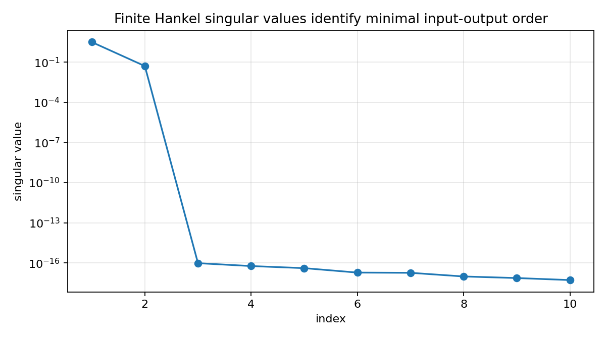

Reachability, observability, and Hankel singular values¶
Tutorial goal
Connect state-space reachability and observability with finite Hankel singular values.
Note
New to the terminology? See the lattice DSP concept map and the causality/data-use guide for how online, offline, block, and MIMO examples should be read.
Context¶
Hankel singular values are easier to interpret once they are tied to state-space reachability and observability. This tutorial builds a small system with unreachable and unobservable state directions and shows that the input-output Hankel matrix only captures directions that are both excited by inputs and seen at outputs.
Key idea and equations¶
For a state-space model (A, B, C, D), Markov parameters satisfy
and a block Hankel matrix factors as
where R is reachability and O is observability.
How to read the result¶
The reachability and observability ranks are both three in the toy model, but the finite Hankel matrix has only two significant singular values because only two directions are both reachable and observable.
Run command¶
python examples/reachability_observability_hankel_demo.py
Run status¶
Return code: 0
Captured stdout¶
state dimension: 4
reachability rank: 3
observability rank: 3
finite Hankel numerical rank (tol=1e-8): 2
Gramian Hankel singular values: [3.22664115, 0.05166835, 0.0, 0.0]
finite Hankel singular values: [3.22643066, 0.05165614, 0.0, 0.0, 0.0, 0.0]
Interpretation: one state is unreachable, one is unobservable, and the
input-output Hankel matrix only has two significant directions.
Figures¶
{kind=link}

reachability_observability_hankel_singular_values.png¶
Generated data files¶
Source code¶
1"""Reachability, observability, and Hankel singular values.
2
3This example shows why Hankel singular values are useful for model reduction.
4It builds a small state-space system with one unreachable state direction and
5one unobservable state direction. The input-output Hankel matrix only sees the
6state directions that are both reachable and observable.
7"""
8
9from __future__ import annotations
10
11import csv
12import os
13from pathlib import Path
14
15import numpy as np
16
17
18def artifact_dir() -> Path:
19 path = Path(os.environ.get("LATTICE_DSP_ARTIFACT_DIR", "reports/example-artifacts"))
20 path.mkdir(parents=True, exist_ok=True)
21 return path
22
23
24def reachability_matrix(A: np.ndarray, B: np.ndarray) -> np.ndarray:
25 n = A.shape[0]
26 return np.hstack([np.linalg.matrix_power(A, k) @ B for k in range(n)])
27
28
29def observability_matrix(A: np.ndarray, C: np.ndarray) -> np.ndarray:
30 n = A.shape[0]
31 return np.vstack([C @ np.linalg.matrix_power(A, k) for k in range(n)])
32
33
34def finite_gramians(A: np.ndarray, B: np.ndarray, C: np.ndarray, horizon: int = 160) -> tuple[np.ndarray, np.ndarray]:
35 Wc = np.zeros((A.shape[0], A.shape[0]), dtype=float)
36 Wo = np.zeros_like(Wc)
37 Ak = np.eye(A.shape[0])
38 for _ in range(horizon):
39 Wc += Ak @ B @ B.T @ Ak.T
40 Wo += Ak.T @ C.T @ C @ Ak
41 Ak = Ak @ A
42 return Wc, Wo
43
44
45def markov_parameters(A: np.ndarray, B: np.ndarray, C: np.ndarray, D: np.ndarray, n_samples: int) -> np.ndarray:
46 out = np.empty(n_samples, dtype=float)
47 out[0] = float(D[0, 0])
48 for k in range(1, n_samples):
49 out[k] = float((C @ np.linalg.matrix_power(A, k - 1) @ B)[0, 0])
50 return out
51
52
53def hankel_from_impulse(impulse: np.ndarray, rows: int, cols: int, offset: int = 1) -> np.ndarray:
54 return np.array([[impulse[i + j + offset] for j in range(cols)] for i in range(rows)], dtype=float)
55
56
57def write_summary(path: Path, rows: list[dict[str, float | int | str]]) -> None:
58 with path.open("w", newline="", encoding="utf-8") as f:
59 writer = csv.DictWriter(f, fieldnames=["quantity", "value"])
60 writer.writeheader()
61 writer.writerows(rows)
62
63
64def main() -> None:
65 out_dir = artifact_dir()
66
67 # Four states, but only two state directions are both reachable and observable.
68 A = np.diag([0.82, 0.55, 0.25, 0.12])
69 B = np.array([[1.0], [0.45], [0.0], [0.8]]) # state 3 is unreachable
70 C = np.array([[1.0, 0.35, 0.9, 0.0]]) # state 4 is unobservable
71 D = np.array([[0.0]])
72
73 R = reachability_matrix(A, B)
74 obs = observability_matrix(A, C)
75 rank_R = int(np.linalg.matrix_rank(R, tol=1e-10))
76 rank_O = int(np.linalg.matrix_rank(obs, tol=1e-10))
77
78 Wc, Wo = finite_gramians(A, B, C)
79 gramian_hsv = np.sqrt(np.maximum(np.real(np.linalg.eigvals(Wc @ Wo)), 0.0))
80 gramian_hsv = np.sort(gramian_hsv)[::-1]
81
82 impulse = markov_parameters(A, B, C, D, n_samples=80)
83 H = hankel_from_impulse(impulse, rows=24, cols=24)
84 finite_hsv = np.linalg.svd(H, compute_uv=False)
85 numerical_hankel_rank = int(np.sum(finite_hsv > 1e-8))
86
87 rows: list[dict[str, float | int | str]] = [
88 {"quantity": "state_dimension", "value": A.shape[0]},
89 {"quantity": "reachability_rank", "value": rank_R},
90 {"quantity": "observability_rank", "value": rank_O},
91 {"quantity": "finite_hankel_rank_tol_1e-8", "value": numerical_hankel_rank},
92 {"quantity": "leading_gramian_hsv", "value": f"{gramian_hsv[0]:.8g}"},
93 {"quantity": "second_gramian_hsv", "value": f"{gramian_hsv[1]:.8g}"},
94 {"quantity": "third_gramian_hsv", "value": f"{gramian_hsv[2]:.8g}"},
95 ]
96 csv_path = out_dir / "reachability_observability_hankel_summary.csv"
97 write_summary(csv_path, rows)
98
99 print("state dimension:", A.shape[0])
100 print("reachability rank:", rank_R)
101 print("observability rank:", rank_O)
102 print("finite Hankel numerical rank (tol=1e-8):", numerical_hankel_rank)
103 print("Gramian Hankel singular values:", [round(float(v), 8) for v in gramian_hsv])
104 print("finite Hankel singular values:", [round(float(v), 8) for v in finite_hsv[:6]])
105 print()
106 print("Interpretation: one state is unreachable, one is unobservable, and the")
107 print("input-output Hankel matrix only has two significant directions.")
108 print(f"wrote {csv_path}")
109
110 try:
111 import matplotlib.pyplot as plt
112 except Exception:
113 print("matplotlib is not installed; skipped figures")
114 return
115
116 fig, ax = plt.subplots(figsize=(7.5, 4.2))
117 idx = np.arange(1, min(10, finite_hsv.size) + 1)
118 ax.semilogy(idx, finite_hsv[: idx.size], marker="o")
119 ax.set_title("Finite Hankel singular values identify minimal input-output order")
120 ax.set_xlabel("index")
121 ax.set_ylabel("singular value")
122 ax.grid(True, alpha=0.3)
123 fig.tight_layout()
124 fig_path = out_dir / "reachability_observability_hankel_singular_values.png"
125 fig.savefig(fig_path, dpi=160)
126 print(f"wrote {fig_path}")
127
128
129if __name__ == "__main__":
130 main()